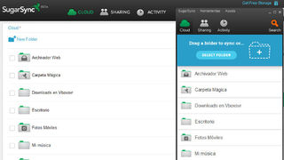
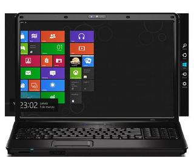
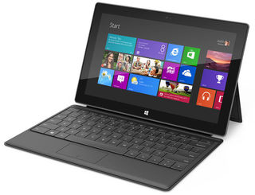
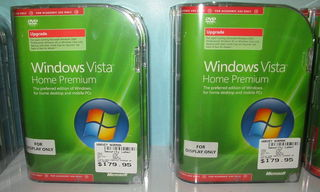
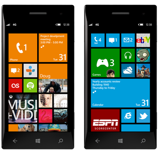
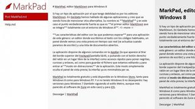
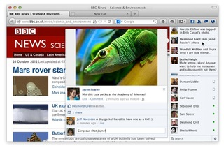
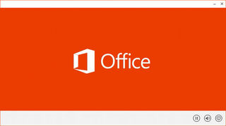

Mon, 19 Nov 2012 17:00:33 GMT
¿Qué debería cambiar Windows 8 para conseguir más aceptación de los usuarios? La pregunta de la semana
¿Qué debería cambiar Windows 8 para conseguir más aceptación de los usuarios? La pregunta de la semana
Parece que las ventas de Windows 8 una vez pasado el entusiasmo inicial no está al nivel de las previsiones de Microsoft. Los opiniones de los usuarios son encontradas, los hay entusiastas o los que piensan que es un sistema para tablets implantado en equipos tradicionales. Muchos pueden ser los factores, pero queremos saber vuestra opinión para saber: ¿Qué debería cambiar Windows 8 para conseguir más aceptación de los usuarios? La pregunta de la semana anterior Las semana anterior os preguntamos por vuestras extensiones indispensables para el navegador. La respuesta más votada por la comunidad ha sido la de Pablo Honorato C que nos dice que: AdBlock Plus. Tanto en Chromium como en Firefox. Ahorra tiempo de carga y por consiguiente menos gasto de batería en portátiles. Además da la opción de permitir publicidad no intrusiva, que realmente me interese. Sencillamente imprescindible. Otras de las más votadas son LastPass o ghostery, dentro de las muchas que habéis mencionado. Ahora queremos saber vuestra opinión de nuevo sobre las características que podrían mejorar en Windows 8 para conseguir el éxito que esperan del sistema desde Microsoft. Recordad que podéis hacerlo en Genbeta Respuestas. ¡Esperamos vuestros comentarios! En Genbeta Respuestas | ¿Qué debería cambiar Windows 8 para conseguir más aceptación de los usuarios?

Parece que las ventas de Windows 8 una vez pasado el entusiasmo inicial no está al nivel de las previsiones de Microsoft. Los opiniones de los usuarios son encontradas, los hay entusiastas o los que piensan que es un sistema para tablets implantado en equipos tradicionales. Muchos pueden ser los factores, pero queremos saber vuestra opinión para saber:
¿Qué debería cambiar Windows 8 para conseguir más aceptación de los usuarios?
La pregunta de la semana anterior
Las semana anterior os preguntamos por vuestras extensiones indispensables para el navegador. La respuesta más votada por la comunidad ha sido la de Pablo Honorato C que nos dice que:
AdBlock Plus. Tanto en Chromium como en Firefox. Ahorra tiempo de carga y por consiguiente menos gasto de batería en portátiles. Además da la opción de permitir publicidad no intrusiva, que realmente me interese. Sencillamente imprescindible.
Otras de las más votadas son LastPass o ghostery, dentro de las muchas que habéis mencionado. Ahora queremos saber vuestra opinión de nuevo sobre las características que podrían mejorar en Windows 8 para conseguir el éxito que esperan del sistema desde Microsoft. Recordad que podéis hacerlo en Genbeta Respuestas. ¡Esperamos vuestros comentarios!
En Genbeta Respuestas | ¿Qué debería cambiar Windows 8 para conseguir más aceptación de los usuarios?
Mon, 19 Nov 2012 15:01:12 GMT
Facebook activará por defecto la navegación segura a través de HTTPS a todos sus usuarios
Facebook activará por defecto la navegación segura a través de HTTPS a todos sus usuarios
Facebook anunció, en enero de 2011, la posibilidad de activar la navegación por HTTPS para toda la sesión a todos sus usuarios. En este caso se trataba de un complemento opt-in que los interesados tenían que activar. Por aquél entonces, dejaban claro que su intención era ofrecer esta opción por defecto “en un futuro cercano”. Casi dos años después, aquí está. A partir esta semana, todos los usuarios que no lo habían activado harán la transición a HTTPS. Desde la red social reconocen que el cambio puede ralentizar un poco la navegación pero afirman haber trabajado e introducido mejoras en el balanceo de carga de su infraestructura para que se note lo menos posible. Aún así, todos aquellos que quieran seguir utilizando la navegación tradicional podrán hacerlo seleccionando una opción que se habilitará a tal efecto en su perfil. Si este es el caso, como hasta ahora el “logueo” se hará a través de HTTPS pero el resto de la navegación no (algo poco recomendable si se utilizan conexiones no seguras en las que cualquiera puede estar escuchando). La llegada del HTTPS por defecto a Facebook era algo necesario y esperable, aunque seguramente les ha llevado más tiempo de la cuenta por lo que comentábamos antes de las mejoras en sus servidores (no olvidemos que estamos hablando de una red social con más de 1.000 millones de usuarios, siendo muchos de ellos activos a diario). En unos días veremos si la implementación ha sido satisfactoria, aunque por ahora personalmente no he notado ralentización ninguna. Vía | TechCrunch En Genbeta | Facebook añade navegación segura mediante HTTPS y un nuevo sistema de CAPTCHA
Facebook anunció, en enero de 2011, la posibilidad de activar la navegación por HTTPS para toda la sesión a todos sus usuarios. En este caso se trataba de un complemento opt-in que los interesados tenían que activar. Por aquél entonces, dejaban claro que su intención era ofrecer esta opción por defecto “en un futuro cercano”. Casi dos años después, aquí está.
A partir esta semana, todos los usuarios que no lo habían activado harán la transición a HTTPS. Desde la red social reconocen que el cambio puede ralentizar un poco la navegación pero afirman haber trabajado e introducido mejoras en el balanceo de carga de su infraestructura para que se note lo menos posible.
Aún así, todos aquellos que quieran seguir utilizando la navegación tradicional podrán hacerlo seleccionando una opción que se habilitará a tal efecto en su perfil. Si este es el caso, como hasta ahora el “logueo” se hará a través de HTTPS pero el resto de la navegación no (algo poco recomendable si se utilizan conexiones no seguras en las que cualquiera puede estar escuchando).
La llegada del HTTPS por defecto a Facebook era algo necesario y esperable, aunque seguramente les ha llevado más tiempo de la cuenta por lo que comentábamos antes de las mejoras en sus servidores (no olvidemos que estamos hablando de una red social con más de 1.000 millones de usuarios, siendo muchos de ellos activos a diario). En unos días veremos si la implementación ha sido satisfactoria, aunque por ahora personalmente no he notado ralentización ninguna.
Vía | TechCrunch
En Genbeta | Facebook añade navegación segura mediante HTTPS y un nuevo sistema de CAPTCHA
Mon, 19 Nov 2012 13:06:28 GMT
Opera lanza servicio de streaming de música... aunque de momento solo en Rusia
Opera lanza servicio de streaming de música... aunque de momento solo en Rusia
Cuando hablamos de Opera pensamos, invariablemente, en una empresa que se dedica a desarrollar, sobre todo, sus navegadores para ordenadores y para móviles. Lo que no imaginaríamos es que Opera, ahora, planea entrar a formar parte del mercado de servicios de música en streaming. Este servicio tendrá por nombre Unlimited Music (tampoco hace falta comerse demasiado la cabeza) e inicialmente comenzará a operar en Rusia, un mercado casi vacío de servicios de música en streaming legales. Eso sí, no será Opera quien gestione el contenido ni quien negocie los temas de derechos, sino que únicamente aportará tecnología. El servicio estará disponible para casi todas las plataformas móviles, y los aparatos con Android y Windows Phone contarán con modo offline (no como en iOS). Su precio será de 150 rublos mensuales (unos 3,70€, según el cambio actual) y su catálogo arrancará con, aproximadamente, dos millones de canciones. Entre su competencia en aquel país está el servicio que ofrece Yandex (el buscador más utilizado). Lo que ignoramos es si desde Opera se animarán a extender este servicio por otros mercados. Quizá en países como España, Reino Unido o Francia no sea tan interesante (ya disponemos de servicios legales de streaming de música); pensad, en su lugar, en países centroamericanos o africanos, donde no hay presencia de Spotify ni de ningún servicio similar. Quizá en esos mercados sí sea bastante interesante. Vía | TechCrunch Imagen | photosteve101
Cuando hablamos de Opera pensamos, invariablemente, en una empresa que se dedica a desarrollar, sobre todo, sus navegadores para ordenadores y para móviles. Lo que no imaginaríamos es que Opera, ahora, planea entrar a formar parte del mercado de servicios de música en streaming.
Este servicio tendrá por nombre Unlimited Music (tampoco hace falta comerse demasiado la cabeza) e inicialmente comenzará a operar en Rusia, un mercado casi vacío de servicios de música en streaming legales. Eso sí, no será Opera quien gestione el contenido ni quien negocie los temas de derechos, sino que únicamente aportará tecnología.
El servicio estará disponible para casi todas las plataformas móviles, y los aparatos con Android y Windows Phone contarán con modo offline (no como en iOS). Su precio será de 150 rublos mensuales (unos 3,70€, según el cambio actual) y su catálogo arrancará con, aproximadamente, dos millones de canciones. Entre su competencia en aquel país está el servicio que ofrece Yandex (el buscador más utilizado).
Lo que ignoramos es si desde Opera se animarán a extender este servicio por otros mercados. Quizá en países como España, Reino Unido o Francia no sea tan interesante (ya disponemos de servicios legales de streaming de música); pensad, en su lugar, en países centroamericanos o africanos, donde no hay presencia de Spotify ni de ningún servicio similar. Quizá en esos mercados sí sea bastante interesante.
Vía | TechCrunch
Imagen | photosteve101
Sun, 18 Nov 2012 19:04:32 GMT
SugarSync 2.0, la nueva beta del disco virtual hace más fácil sincronizar carpetas
SugarSync 2.0, la nueva beta del disco virtual hace más fácil sincronizar carpetas
Dentro de los discos duros virtuales hay uno que realmente siempre me ha gustado, tanto por su estética cuidada como por su funcionalidad. Se trata de SugarSync, un disco duro virtual que nos ofrece 5 GB de espacio gratuito y un cliente de escritorio para sincronizar los archivos realmente bueno. Y ahora todavía más, puesto que han lanzado SugarSync 2.0, la nueva beta del disco virtual hace más fácil sincronizar carpetas. El nuevo cliente además de la Carpeta Mágica, como emblema de este disco duro, pensada para sincronizar los contenidos entre distintos equipos donde tenemos instalado este cliente, ahora se le une la facilidad que incorpora para sincronizar cualquier carpeta de nuestros equipos. Basta con arrastrar y soltar la carpeta en SugarSync para que quede sincronizada. La versión beta 2.0 está disponible para Windows, Mac y Android que incorporan la nueva característica de arrastar y soltar las carpetas que queremos sincronizar. También podemos sincronizar carpetas que no deseamos que no se sincronicen con ningún sistema en particular. Para el resto de sistemas iOS, BlackBerry o Windows Phone llegará próximamente. Otra de las cuestiones que han mejorado ha sido la facilidad para compartir y gestionar las carpetas y archivos. Como en el caso anterior, para compartir una carpeta basta con arrastar y soltar dentro de la pestaña compartir del nuevo cliente de SugarSync. Por último la posibilidad de utilizarlo como una opción más dentro del explorador de Windows y Mac, algo realmente cómodo que nos permitirá añadir carpeta, compartir de forma pública un documento o nos mostrará las versiones de un documento que tenemos almacenadas. A mi juicio es uno de los valores de este disco duro virtual frente a otros servicios como Dropbox o SkyDrive, puesto que de esta manera mantengo la organización de los archivos que yo deseo, sincronizando las carpetas independientemente de la ubicación que tengan. El único pero que le pongo, y uno de los motivos por los que no lo utilizo más, es que carece de cliente para Linux. Por lo demás esta nueva versión realmente es muy cómoda para gestionar nuestros documentos online. Más Información | SugarSync 2.0 En Genbeta | Nueve alternativas más a Dropbox a tener en cuenta si estamos pensando en cambiar de servicio

Dentro de los discos duros virtuales hay uno que realmente siempre me ha gustado, tanto por su estética cuidada como por su funcionalidad. Se trata de SugarSync, un disco duro virtual que nos ofrece 5 GB de espacio gratuito y un cliente de escritorio para sincronizar los archivos realmente bueno. Y ahora todavía más, puesto que han lanzado SugarSync 2.0, la nueva beta del disco virtual hace más fácil sincronizar carpetas.
El nuevo cliente además de la Carpeta Mágica, como emblema de este disco duro, pensada para sincronizar los contenidos entre distintos equipos donde tenemos instalado este cliente, ahora se le une la facilidad que incorpora para sincronizar cualquier carpeta de nuestros equipos. Basta con arrastrar y soltar la carpeta en SugarSync para que quede sincronizada.
La versión beta 2.0 está disponible para Windows, Mac y Android que incorporan la nueva característica de arrastar y soltar las carpetas que queremos sincronizar. También podemos sincronizar carpetas que no deseamos que no se sincronicen con ningún sistema en particular. Para el resto de sistemas iOS, BlackBerry o Windows Phone llegará próximamente.
Otra de las cuestiones que han mejorado ha sido la facilidad para compartir y gestionar las carpetas y archivos. Como en el caso anterior, para compartir una carpeta basta con arrastar y soltar dentro de la pestaña compartir del nuevo cliente de SugarSync.
Por último la posibilidad de utilizarlo como una opción más dentro del explorador de Windows y Mac, algo realmente cómodo que nos permitirá añadir carpeta, compartir de forma pública un documento o nos mostrará las versiones de un documento que tenemos almacenadas.
A mi juicio es uno de los valores de este disco duro virtual frente a otros servicios como Dropbox o SkyDrive, puesto que de esta manera mantengo la organización de los archivos que yo deseo, sincronizando las carpetas independientemente de la ubicación que tengan. El único pero que le pongo, y uno de los motivos por los que no lo utilizo más, es que carece de cliente para Linux. Por lo demás esta nueva versión realmente es muy cómoda para gestionar nuestros documentos online.
Más Información | SugarSync 2.0
En Genbeta | Nueve alternativas más a Dropbox a tener en cuenta si estamos pensando en cambiar de servicio
Sun, 18 Nov 2012 07:32:33 GMT
La llegada de Android 4.2 y sus nuevas funcionalidades. La imagen de la semana
La llegada de Android 4.2 y sus nuevas funcionalidades. La imagen de la semana
Si hay gigante que esta semana ha estado especialmente activo ha sido Google. La llegada de Google Play Music a varios países de Europa, entre ellos España, y el lanzamiento de sus nuevos Nexus 4 y 10, con los que estrenaba una nueva versión del sistema operativo. Por eso hemos querido que la imagen de la semana fuera para Android 4.2 y sus nuevas funcionalidades. Desde poder utilizar la tablet con varios usuarios pasando por las mejoras que incorpora para la gestión de la cámara de fotos, los widget en la pantalla de bloqueo, el soporte para Miracast. Ninguna sorpresa sobre lo ya anunciado en su momento cuando tuvieron que cancelar el lanzamiento de los productos por el huracán Sandy. Lo cierto es que para ser una actualización menor mejora de forma notable en determinados aspectos. Un ejemplo es la escritura deslizante en el teclado, donde no es necesario pulsar las letras sino que nos vamos deslizando por el teclado de una a otra hasta completar la palabra. Y Google ha conseguido que el reconocimiento sea excelente en la escritura. Al principio cuesta un poco acostumbrarse, pero pasado un poco de tiempo, ya casi no sabemos escribir de otra manera. Ahora sólo nos queda que poco a poco vaya llegando al resto de terminales. Ya está llegando a los terminales que tienen una experiencia de Android pura, los Nexus, que además tienen soporte de Google. Los que tienen alguna personalización de marca lo harán un poco más tarde, como siempre claro, los equipos que sean de gama alta. En Genbeta | Google presenta las novedades de Android 4.2 aún habiendo cancelado su evento oficial
Si hay gigante que esta semana ha estado especialmente activo ha sido Google. La llegada de Google Play Music a varios países de Europa, entre ellos España, y el lanzamiento de sus nuevos Nexus 4 y 10, con los que estrenaba una nueva versión del sistema operativo. Por eso hemos querido que la imagen de la semana fuera para Android 4.2 y sus nuevas funcionalidades.
Desde poder utilizar la tablet con varios usuarios pasando por las mejoras que incorpora para la gestión de la cámara de fotos, los widget en la pantalla de bloqueo, el soporte para Miracast. Ninguna sorpresa sobre lo ya anunciado en su momento cuando tuvieron que cancelar el lanzamiento de los productos por el huracán Sandy.
Lo cierto es que para ser una actualización menor mejora de forma notable en determinados aspectos. Un ejemplo es la escritura deslizante en el teclado, donde no es necesario pulsar las letras sino que nos vamos deslizando por el teclado de una a otra hasta completar la palabra. Y Google ha conseguido que el reconocimiento sea excelente en la escritura. Al principio cuesta un poco acostumbrarse, pero pasado un poco de tiempo, ya casi no sabemos escribir de otra manera.
Ahora sólo nos queda que poco a poco vaya llegando al resto de terminales. Ya está llegando a los terminales que tienen una experiencia de Android pura, los Nexus, que además tienen soporte de Google. Los que tienen alguna personalización de marca lo harán un poco más tarde, como siempre claro, los equipos que sean de gama alta.
En Genbeta | Google presenta las novedades de Android 4.2 aún habiendo cancelado su evento oficial
Sat, 17 Nov 2012 17:08:03 GMT
Windows 8 no se está vendiendo tan bien como Microsoft pensaba. ¿Vuelve el síndrome de Windows Vista?
Windows 8 no se está vendiendo tan bien como Microsoft pensaba. ¿Vuelve el síndrome de Windows Vista?
Tras conocerse las cifras iniciales de venta de Windows 8, cuatro millones de copias en los primeros tres días, todos esperábamos conocer cómo iba evolucionando el asunto. Deseo que se ha visto apagado en un incómodo silencio. Una ausencia de datos que empezaba a oler a quemado. Ahora sabemos por qué: las ventas de Windows 8 están por debajo de las expectativas de Microsoft. Mal asunto para la compañía, aunque aún es pronto para colgar al sistema operativo el cartel de fracaso comercial. Por qué no se vende Windows 8 Las razones según el fabricante Microsoft culpa de ello a los fabricantes de hardware, que no están empleando recursos bastantes para apoyar el nuevo sistema operativo. La razón, aunque sea cierta, no justifica por sí misma la pobre implantación de Windows 8 hasta la fecha. Y digo que no es suficiente porque Microsoft ha lanzado una campaña monumental en apoyo de su criatura, además de una oferta casi irresistible de actualización por un precio muy asequible. Por último, Windows 8 no está enfocado únicamente al mercado de PCs, más bien al contrario, es un sistema pensado para tabletas. Vídeo | YouTube ¿Entonces? Concurren varios factores para que se esté produciendo esta situación. Por un lado los requisitos de hardware que, si bien son similares a los de Windows 7 a nivel de tripas, no lo son a nivel gráfico. Esto es así no tanto por las tarjetas gráficas, sino por las pantallas. Requisitos de hardware Para poder ejecutar aplicaciones Modern UI el requisito mínimo de resolución es 1024×768 píxel y 1366×768 píxel para poder visualizar dos aplicaciones Modern UI de forma simultánea. La mayoría de portátiles pequeños capaces de ejecutar Windows 7, no soportan resoluciones verticales de 768 píxel, quedando pues descartados. Los que son un poco más grandes, en el mejor de los casos soportan una resolución horizontal de 1280 píxel, con lo que pierden parte de las posibilidades que brinda el sistema. Con los monitores de escritorio ocurre algo similar, la mayoría soportan 1280×1024 píxel y no más. Para el usuario doméstico esto es una barrera. No se trata sólo de gastar 29,99 euros en la actualización, en el peor de los casos el equipo se queda corto y en el mejor necesita otro monitor. Esto son ya palabras mayores. La resolución mínima es superior a la soportada por muchas pantallas en la actualidad Entorno empresarial En el entorno empresarial todavía XP tiene mucho peso y Windows 7 no lleva tanto tiempo como para que una corporación, y no digamos una Pyme, se planteen el cambio. El salto a Windows 8 en la empresa no comporta únicamente el precio de la licencia, hay que añadir también el coste de formación del personal para un sistema operativo que supone un gran salto en la experiencia de uso. Si añadimos a la ecuación de los costes la inversión en hardware y la crisis económica, el resultado es que en las empresas no están muy por la labor del cambio. Tabletas Respecto del mundo de las tabletas, Microsoft ha optado por lanzar una versión poco potente de Surface, la equipada con Windows RT, cuyas prestaciones están por debajo de Windows 8. Además, la relación precio/prestaciones de los primeros modelos es desfavorable para competir con las asentadas tabletas de Apple, y mucho menos con las animadas por el androide. Están en mitad de ninguna parte y el usuario de alto poder adquisitivo opta por el iPad, y el de menos recursos por las tabletas basadas en Android. Utilidad Otro aspecto a considerar es una gran parte de las bondades de Windows 8 están enfocadas a la experiencia táctil y los PCs de escritorio no le sacan partido. En el entorno profesional tampoco parece una razón para el cambio el enfoque lúdico del producto, optimizado para navegar, ver e intercambiar imágenes, participar en redes sociales y reproducir vídeos. Las personas que trabajan con equipos informáticos dentro de actividades ajenas al mundo tecnológico, suelen tener en pantalla el programa principal que utilizan (contabilidad, gestión de pacientes, programas de CAD, ofimática, etc.) y de nada les sirve la animada y colorida pantalla de inicio de Windows 8. Para ejecutar ese tipo de software ya disponen de Windows XP, Vista o Windows 7, sin necesidad de inversión adicional. No quiero imaginar el trabajo de los administradores de sistemas para eliminar del escritorio todas las “tonterías” que pueden distraer al respetable de sus obligaciones. Windows 8 bajo el síndrome de Windows Vista Con Windows 8 Microsoft corre un gran riesgo, en un momento económico poco proclive a los saltos cuánticos. El sistema es bueno, rápido, más seguro que sus predecesores, hasta ahora barato… pero tal vez demasiado revolucionario y adelantado a su tiempo. Así ocurrió con Windows Vista: un buen sistema operativo que cambió la experiencia de uso y necesitó requisitos de hardware elevados. Vista ha sido uno de los contados fracasos del gigante de Redmond. Steve Sinofsky ha sido el gran artífice de Windows 7 y responsable por ello de un considerable éxito para Microsoft. Ahora podría ser también el responsable de un gran fracaso si la tendencia se mantiene después de la campaña navideña. ¿Ha sido esto la razón de su salida de la compañía? Seguramente no, pero puede que haya tenido su peso. La verdad es que probablemente nunca lo sabremos. Vía | Xataka Windows » Paul Thurrott Imagen | Microsoft Sweden, Stephen Edgar En Genbeta | ¿Ha puesto Microsoft el nivel muy alto con sus expectativas sobre Windows 8?, El reinado de Steve Ballmer: lo que Microsoft ha sido y lo que puede o no puede ser sin Steve Sinofsky
Tras conocerse las cifras iniciales de venta de Windows 8, cuatro millones de copias en los primeros tres días, todos esperábamos conocer cómo iba evolucionando el asunto. Deseo que se ha visto apagado en un incómodo silencio. Una ausencia de datos que empezaba a oler a quemado. Ahora sabemos por qué: las ventas de Windows 8 están por debajo de las expectativas de Microsoft. Mal asunto para la compañía, aunque aún es pronto para colgar al sistema operativo el cartel de fracaso comercial.
Por qué no se vende Windows 8
Las razones según el fabricante
Microsoft culpa de ello a los fabricantes de hardware, que no están empleando recursos bastantes para apoyar el nuevo sistema operativo. La razón, aunque sea cierta, no justifica por sí misma la pobre implantación de Windows 8 hasta la fecha.
Y digo que no es suficiente porque Microsoft ha lanzado una campaña monumental en apoyo de su criatura, además de una oferta casi irresistible de actualización por un precio muy asequible. Por último, Windows 8 no está enfocado únicamente al mercado de PCs, más bien al contrario, es un sistema pensado para tabletas.
Vídeo | YouTube
¿Entonces? Concurren varios factores para que se esté produciendo esta situación. Por un lado los requisitos de hardware que, si bien son similares a los de Windows 7 a nivel de tripas, no lo son a nivel gráfico. Esto es así no tanto por las tarjetas gráficas, sino por las pantallas.
Requisitos de hardware
Para poder ejecutar aplicaciones Modern UI el requisito mínimo de resolución es 1024×768 píxel y 1366×768 píxel para poder visualizar dos aplicaciones Modern UI de forma simultánea. La mayoría de portátiles pequeños capaces de ejecutar Windows 7, no soportan resoluciones verticales de 768 píxel, quedando pues descartados.
Los que son un poco más grandes, en el mejor de los casos soportan una resolución horizontal de 1280 píxel, con lo que pierden parte de las posibilidades que brinda el sistema. Con los monitores de escritorio ocurre algo similar, la mayoría soportan 1280×1024 píxel y no más. Para el usuario doméstico esto es una barrera. No se trata sólo de gastar 29,99 euros en la actualización, en el peor de los casos el equipo se queda corto y en el mejor necesita otro monitor. Esto son ya palabras mayores.
La resolución mínima es superior a la soportada por muchas pantallas en la actualidad
Entorno empresarial
En el entorno empresarial todavía XP tiene mucho peso y Windows 7 no lleva tanto tiempo como para que una corporación, y no digamos una Pyme, se planteen el cambio. El salto a Windows 8 en la empresa no comporta únicamente el precio de la licencia, hay que añadir también el coste de formación del personal para un sistema operativo que supone un gran salto en la experiencia de uso. Si añadimos a la ecuación de los costes la inversión en hardware y la crisis económica, el resultado es que en las empresas no están muy por la labor del cambio.
Tabletas
Respecto del mundo de las tabletas, Microsoft ha optado por lanzar una versión poco potente de Surface, la equipada con Windows RT, cuyas prestaciones están por debajo de Windows 8. Además, la relación precio/prestaciones de los primeros modelos es desfavorable para competir con las asentadas tabletas de Apple, y mucho menos con las animadas por el androide. Están en mitad de ninguna parte y el usuario de alto poder adquisitivo opta por el iPad, y el de menos recursos por las tabletas basadas en Android.

Utilidad
Otro aspecto a considerar es una gran parte de las bondades de Windows 8 están enfocadas a la experiencia táctil y los PCs de escritorio no le sacan partido. En el entorno profesional tampoco parece una razón para el cambio el enfoque lúdico del producto, optimizado para navegar, ver e intercambiar imágenes, participar en redes sociales y reproducir vídeos.
Las personas que trabajan con equipos informáticos dentro de actividades ajenas al mundo tecnológico, suelen tener en pantalla el programa principal que utilizan (contabilidad, gestión de pacientes, programas de CAD, ofimática, etc.) y de nada les sirve la animada y colorida pantalla de inicio de Windows 8.
Para ejecutar ese tipo de software ya disponen de Windows XP, Vista o Windows 7, sin necesidad de inversión adicional. No quiero imaginar el trabajo de los administradores de sistemas para eliminar del escritorio todas las “tonterías” que pueden distraer al respetable de sus obligaciones.
Windows 8 bajo el síndrome de Windows Vista
Con Windows 8 Microsoft corre un gran riesgo, en un momento económico poco proclive a los saltos cuánticos. El sistema es bueno, rápido, más seguro que sus predecesores, hasta ahora barato… pero tal vez demasiado revolucionario y adelantado a su tiempo.
Así ocurrió con Windows Vista: un buen sistema operativo que cambió la experiencia de uso y necesitó requisitos de hardware elevados. Vista ha sido uno de los contados fracasos del gigante de Redmond.

Steve Sinofsky ha sido el gran artífice de Windows 7 y responsable por ello de un considerable éxito para Microsoft. Ahora podría ser también el responsable de un gran fracaso si la tendencia se mantiene después de la campaña navideña. ¿Ha sido esto la razón de su salida de la compañía? Seguramente no, pero puede que haya tenido su peso. La verdad es que probablemente nunca lo sabremos.
Vía | Xataka Windows » Paul Thurrott
Imagen | Microsoft Sweden, Stephen Edgar
En Genbeta | ¿Ha puesto Microsoft el nivel muy alto con sus expectativas sobre Windows 8?, El reinado de Steve Ballmer: lo que Microsoft ha sido y lo que puede o no puede ser sin Steve Sinofsky
Sat, 17 Nov 2012 14:41:18 GMT
Windows Phone 7.8 podría estar disponible en muy pocos días
Windows Phone 7.8 podría estar disponible en muy pocos días
Windows Phone 7.8, el paliativo que nos dan a los que nos atrevimos a dar el paso a Windows Phone en su momento (unos antes que otros) sin permitirnos actualizar a Windows Phone 8, podría estar disponible para descargar en apenas días. Eso podemos entender de la información dad por la división asiática de Microsoft. En la nota que han publicado indican que Windows Phone 7.8 ha alcanzado ya el hito de su desarrollo RTM y que en cuestión de días o semanas será enviada a los dispositivos (recordad que, cuando hablamos de Windows Phone, las actualizaciones no dependen de los operadores de telefonía móvil). Recordemos que Windows Phone 7.8 incluirá algunas novedades de interés para los usuarios actuales de Windows Phone, como la nueva pantalla de inicio. Estaremos impacientes a su aparición y no dudéis que haremos nuestra revisión cuando la tengamos a nuestra disposición. Vía | Xataka Windows En Genbeta | Aparecen nuevos detalles acerca de Windows Phone 7.8

Windows Phone 7.8, el paliativo que nos dan a los que nos atrevimos a dar el paso a Windows Phone en su momento (unos antes que otros) sin permitirnos actualizar a Windows Phone 8, podría estar disponible para descargar en apenas días. Eso podemos entender de la información dad por la división asiática de Microsoft.
En la nota que han publicado indican que Windows Phone 7.8 ha alcanzado ya el hito de su desarrollo RTM y que en cuestión de días o semanas será enviada a los dispositivos (recordad que, cuando hablamos de Windows Phone, las actualizaciones no dependen de los operadores de telefonía móvil).
Recordemos que Windows Phone 7.8 incluirá algunas novedades de interés para los usuarios actuales de Windows Phone, como la nueva pantalla de inicio. Estaremos impacientes a su aparición y no dudéis que haremos nuestra revisión cuando la tengamos a nuestra disposición.
Vía | Xataka Windows
En Genbeta | Aparecen nuevos detalles acerca de Windows Phone 7.8
Sat, 17 Nov 2012 10:00:48 GMT
MarkPad, editor MarkDown para Windows 8
MarkPad, editor MarkDown para Windows 8
Si hay un tipo de aplicación por el que tengo debilidad es por los editores MarkDown. En Genbeta hemos hablado de algunas aplicaciones y creo que va siendo hora de mencionar otra alternativa. Su nombre es MarkPad y en este caso el punto verdaderamente fuerte es que se integra totalmente con el entorno de Windows 8. Las características del editor son las que podemos esperar para una aplicación de este género: un editor donde escribimos el texto con los códigos habituales, un panel donde vemos una vista previa en tiempo casi real (se actualiza cuando paramos de escribir) y una lista de documentos abiertos. La aplicación dispone de algunos comandos en la AppBar (la que aparece al tirar del borde superior del trackpad/pantalla táctil, o pulsando con el botón derecho del ratón en un lugar libre de la interfaz) como accesos rápidos para poner negritas, cursivas y enlaces, así como para guardar el fichero que estamos editando y para entrar al modo sin distracciones de la aplicación. Este modo simplemente oculta el panel de vista previa; la interfaz ya es minimalista per se. MarkPad es totalmente gratuito y está disponible en la Windows Store, tanto para Windows 8 como para Windows RT. Y si no tenéis Windows 8 no desesperéis: hay versión para Windows 7 (también siguiendo el estilo Metro, aunque más parecido al software de Zune en este caso). Y, por cierto, estas dos aplicaciones son de código abierto. Descargar | MarkPad Sitio oficial | MarkPad

Si hay un tipo de aplicación por el que tengo debilidad es por los editores MarkDown. En Genbeta hemos hablado de algunas aplicaciones y creo que va siendo hora de mencionar otra alternativa. Su nombre es MarkPad y en este caso el punto verdaderamente fuerte es que se integra totalmente con el entorno de Windows 8.
Las características del editor son las que podemos esperar para una aplicación de este género: un editor donde escribimos el texto con los códigos habituales, un panel donde vemos una vista previa en tiempo casi real (se actualiza cuando paramos de escribir) y una lista de documentos abiertos.
La aplicación dispone de algunos comandos en la AppBar (la que aparece al tirar del borde superior del trackpad/pantalla táctil, o pulsando con el botón derecho del ratón en un lugar libre de la interfaz) como accesos rápidos para poner negritas, cursivas y enlaces, así como para guardar el fichero que estamos editando y para entrar al modo sin distracciones de la aplicación. Este modo simplemente oculta el panel de vista previa; la interfaz ya es minimalista per se.
MarkPad es totalmente gratuito y está disponible en la Windows Store, tanto para Windows 8 como para Windows RT. Y si no tenéis Windows 8 no desesperéis: hay versión para Windows 7 (también siguiendo el estilo Metro, aunque más parecido al software de Zune en este caso). Y, por cierto, estas dos aplicaciones son de código abierto.
Descargar | MarkPad
Sitio oficial | MarkPad
Sat, 17 Nov 2012 06:06:31 GMT
"Lo importante es que los usuarios puedan ser capaces de elegir": hablamos con Todd Simpson, responsable de innovación en Mozilla
"Lo importante es que los usuarios puedan ser capaces de elegir": hablamos con Todd Simpson, responsable de innovación en Mozilla
Mozilla está dando los últimos pasos para lanzar su Social API, que integrará las redes sociales con el propio navegador. Llevamos algún tiempo probando esta integración con Facebook en la versión 17 en pruebas de Firefox, y hoy hemos tenido la oportunidad de hablar con el responsable de innovación de Mozilla Todd Simpson para que nos cuente los detalles acerca de este lanzamiento y algunas cosas más acerca del futuro de Mozilla. Pongámonos en situación: como responsable del departamento de innovación en Mozilla, Todd Simpson se encarga de garantizar el libre acceso a la web y crear servicios usando las nuevas tecnologías. Es doctor en informática, y responsable de la fundación de un gran número de compañías. Veamos qué es lo que nos dice acerca de la apuesta de Social API. Agradecemos el tiempo que Todd ha tenido con nosotros desde California, así como el del resto de las personas que han podido hacer realidad esta charla. Genbeta: ¿Como llegó la idea de crear algo como la Social API de Firefox? Todd: La idea de Social API llegó viendo cómo cambia el comportamiento de los usuarios al navegar por internet. Hace seis años todo el mundo empezaba a navegar usando un buscador para encontrar las páginas web que quería, y con el tiempo los navegadores terminaron integrando el buscador dentro de la misma interfaz. El objetivo de Social API es el mismo: integrar las redes sociales con el navegador para que el usuario pueda moverse libremente por la web al mismo tiempo que utiliza un servicio como Facebook con notificaciones, un panel lateral, una sección desde la que poder consultar los contactos… en definitiva es un buen modo de experimentar la web social de hoy. Genbeta: ¿Qué diferencia tiene esta Social API con una extensión que pueda hacer lo mismo? ¿Qué es lo que queréis conseguir? Todd: Una extensión o un Add-on pueden ser capaces de hacer lo mismo, pero no ofrecen la misma experiencia. Con un add-on el usuario tiene que pasar por un proceso de instalación, algo que ya puede transmitirle una mala experiencia de usuario. En cambio, con la Social API, sólo hay que pulsar un botón para activar o desactivar toda la integración. Se trata, sobretodo, de ofrecer la mejor experiencia de usuario y la más simple. ¿Ver un partido en streaming mientras charlamos con nuestros contactos de Facebook? Sí, es una de las posibilidades de Social API. Creemos que además de las tres grandes plataformas móviles, iOS, Android y Windows Phone; la misma web puede actuar como una cuarta gran plataforma. Genbeta: ¿Cuál ha sido la reacción de Facebook ante esto y durante el desarrollo de esta fase de pruebas de Social API? Todd: Muy buena. Ha sido un esfuerzo colaborativo entre Mozilla y Facebook, en el que ambos equipos han trabajado muy bien para conseguir lo que ahora mismo se puede probar. Genbeta: Safari y OS X integran Twitter y Facebook en el propio núcleo del sistema, Ubuntu Linux trata los servicios web como aplicaciones en su “dock” de accesos directos…¿Cómo crees que es esta integración social con otros navegadores y sistemas? Todd: En este punto nos gusta particularmente el hecho de que ahora mismo un usuario puede elegir. Queremos que haya opciones, que haya diferencias entre todas las plataformas donde una persona pueda decidir y acomodarse, ir saltando entre opciones y acomodándose a la/s que mejor le parezca. Social API es nuestra apuesta, nuestro modo de ver esta integración de las redes de internet. Genbeta: ¿Cómo veis la extensión de Social API a medida que pasen los días? ¿Algunas predicciones acerca de cómo lo van a adoptar los usuarios? Todd: Estamos trabajando ya con otros servicios para que se integren con Social API, y nuestra intención es ir ampliando el abanico de redes disponibles con el tiempo. Una vez más, que los usuarios tengan la posibilidad de escoger. En cuanto a la adopción, creo que será lenta pero fija. Los usuarios de Firefox irán empezando a usar las posibilidades de Social API poco a poco. Genbeta: Pasemos a algunas cuestiones más generales en cuanto a Mozilla: ¿Cuál es vuestra opinión respecto a la evolución de los navegadores de escritorio y móviles? Todd: Nos encanta que haya tanta competencia ahora mismo. La web avanza con los nuevos estándares HTML5, y en Mozilla la vemos como una gran plataforma equiparable a iOS, Android o Windows Phone. Una cuarta plataforma que sea la propia web por sí misma. Es, de hecho, lo que estamos intentando demostrar con el desarrollo de Firefox OS. Genbeta: Si no me equivoco, Firefox OS se basa enteramente en la web usando HTML5, ¿cierto? Todd: Correcto. Queremos demostrar que la web es capaz de convertirse en todo un sistema operativo. Los primeros teléfonos con Firefox OS aparecerán a lo largo del año que viene, mientras que Social API aparecerá junto con la versión 17 de Firefox. En Genbeta | Firefox cumple ocho años
Mozilla está dando los últimos pasos para lanzar su Social API, que integrará las redes sociales con el propio navegador. Llevamos algún tiempo probando esta integración con Facebook en la versión 17 en pruebas de Firefox, y hoy hemos tenido la oportunidad de hablar con el responsable de innovación de Mozilla Todd Simpson para que nos cuente los detalles acerca de este lanzamiento y algunas cosas más acerca del futuro de Mozilla.
Pongámonos en situación: como responsable del departamento de innovación en Mozilla, Todd Simpson se encarga de garantizar el libre acceso a la web y crear servicios usando las nuevas tecnologías. Es doctor en informática, y responsable de la fundación de un gran número de compañías. Veamos qué es lo que nos dice acerca de la apuesta de Social API. Agradecemos el tiempo que Todd ha tenido con nosotros desde California, así como el del resto de las personas que han podido hacer realidad esta charla.

Genbeta: ¿Como llegó la idea de crear algo como la Social API de Firefox?
Todd: La idea de Social API llegó viendo cómo cambia el comportamiento de los usuarios al navegar por internet. Hace seis años todo el mundo empezaba a navegar usando un buscador para encontrar las páginas web que quería, y con el tiempo los navegadores terminaron integrando el buscador dentro de la misma interfaz.
El objetivo de Social API es el mismo: integrar las redes sociales con el navegador para que el usuario pueda moverse libremente por la web al mismo tiempo que utiliza un servicio como Facebook con notificaciones, un panel lateral, una sección desde la que poder consultar los contactos… en definitiva es un buen modo de experimentar la web social de hoy.
Genbeta: ¿Qué diferencia tiene esta Social API con una extensión que pueda hacer lo mismo? ¿Qué es lo que queréis conseguir?
Todd: Una extensión o un Add-on pueden ser capaces de hacer lo mismo, pero no ofrecen la misma experiencia. Con un add-on el usuario tiene que pasar por un proceso de instalación, algo que ya puede transmitirle una mala experiencia de usuario. En cambio, con la Social API, sólo hay que pulsar un botón para activar o desactivar toda la integración. Se trata, sobretodo, de ofrecer la mejor experiencia de usuario y la más simple.
¿Ver un partido en streaming mientras charlamos con nuestros contactos de Facebook? Sí, es una de las posibilidades de Social API.
Creemos que además de las tres grandes plataformas móviles, iOS, Android y Windows Phone; la misma web puede actuar como una cuarta gran plataforma.
Genbeta: ¿Cuál ha sido la reacción de Facebook ante esto y durante el desarrollo de esta fase de pruebas de Social API?
Todd: Muy buena. Ha sido un esfuerzo colaborativo entre Mozilla y Facebook, en el que ambos equipos han trabajado muy bien para conseguir lo que ahora mismo se puede probar.
Genbeta: Safari y OS X integran Twitter y Facebook en el propio núcleo del sistema, Ubuntu Linux trata los servicios web como aplicaciones en su “dock” de accesos directos…¿Cómo crees que es esta integración social con otros navegadores y sistemas?
Todd: En este punto nos gusta particularmente el hecho de que ahora mismo un usuario puede elegir. Queremos que haya opciones, que haya diferencias entre todas las plataformas donde una persona pueda decidir y acomodarse, ir saltando entre opciones y acomodándose a la/s que mejor le parezca. Social API es nuestra apuesta, nuestro modo de ver esta integración de las redes de internet.

Genbeta: ¿Cómo veis la extensión de Social API a medida que pasen los días? ¿Algunas predicciones acerca de cómo lo van a adoptar los usuarios?
Todd: Estamos trabajando ya con otros servicios para que se integren con Social API, y nuestra intención es ir ampliando el abanico de redes disponibles con el tiempo. Una vez más, que los usuarios tengan la posibilidad de escoger. En cuanto a la adopción, creo que será lenta pero fija. Los usuarios de Firefox irán empezando a usar las posibilidades de Social API poco a poco.
Genbeta: Pasemos a algunas cuestiones más generales en cuanto a Mozilla: ¿Cuál es vuestra opinión respecto a la evolución de los navegadores de escritorio y móviles?
Todd: Nos encanta que haya tanta competencia ahora mismo. La web avanza con los nuevos estándares HTML5, y en Mozilla la vemos como una gran plataforma equiparable a iOS, Android o Windows Phone. Una cuarta plataforma que sea la propia web por sí misma. Es, de hecho, lo que estamos intentando demostrar con el desarrollo de Firefox OS.
Genbeta: Si no me equivoco, Firefox OS se basa enteramente en la web usando HTML5, ¿cierto?
Todd: Correcto. Queremos demostrar que la web es capaz de convertirse en todo un sistema operativo. Los primeros teléfonos con Firefox OS aparecerán a lo largo del año que viene, mientras que Social API aparecerá junto con la versión 17 de Firefox.
En Genbeta | Firefox cumple ocho años
Fri, 16 Nov 2012 17:51:06 GMT
Microsoft publica una versión gratuita de prueba de Office 2013, válida por 60 días
Microsoft publica una versión gratuita de prueba de Office 2013, válida por 60 días
Microsoft ha puesto a disposición de todos los usuarios una versión gratuita de evaluación de la suite ofimática Office 2013 válida durante 60 días. Una buena fórmula para probar el producto, y si nos convence, adquirir este con posterioridad. Para poder descargar Office 2013 es necesario tener una cuenta de Microsoft y complementar algunos datos para el registro. El formulario se rellena casi por completo automáticamente gracias a la cuenta. Una vez que hemos completado el paso, se nos facilitará la clave del producto necesaria para su funcionamiento, que podemos imprimir o anotar. Una vez que disponemos de la clave (si no la muestra de manera automática hay que refrescar el navegador con la tecla F5), seleccionamos el idioma y ya podemos descargar. No sé si será por sobrecarga, pero he tenido que repetir el refresco varias veces. Tampoco ha iniciado el gestor de descargas con la interfaz Modern UI de Internet Explorer 10 (pudiera ser una coincidencia), aunque sí con la versión de escritorio clásico. El tamaño de la descarga es importante: 782,25 MB para la versión de 64 bits. La paciencia ha de ser nuestra aliada en este caso, y con la instalación también. La versión de evaluación es completa, idéntica a la de pago, sin más restricción que el mencionado periodo de sesenta días. Se trata de Office Professional Plus 2013 concretamente, que integra Word, PowerPoint, Excel, Outlook, OneNote, Access, Publisher y Lync. Todo un conjunto de aplicaciones que abarca un amplio espectro de necesidades ofimáticas. Vía | Xataka Windows Web | Descarga

Microsoft ha puesto a disposición de todos los usuarios una versión gratuita de evaluación de la suite ofimática Office 2013 válida durante 60 días. Una buena fórmula para probar el producto, y si nos convence, adquirir este con posterioridad.
Para poder descargar Office 2013 es necesario tener una cuenta de Microsoft y complementar algunos datos para el registro. El formulario se rellena casi por completo automáticamente gracias a la cuenta. Una vez que hemos completado el paso, se nos facilitará la clave del producto necesaria para su funcionamiento, que podemos imprimir o anotar.
Una vez que disponemos de la clave (si no la muestra de manera automática hay que refrescar el navegador con la tecla F5), seleccionamos el idioma y ya podemos descargar. No sé si será por sobrecarga, pero he tenido que repetir el refresco varias veces.
Tampoco ha iniciado el gestor de descargas con la interfaz Modern UI de Internet Explorer 10 (pudiera ser una coincidencia), aunque sí con la versión de escritorio clásico. El tamaño de la descarga es importante: 782,25 MB para la versión de 64 bits. La paciencia ha de ser nuestra aliada en este caso, y con la instalación también.
La versión de evaluación es completa, idéntica a la de pago, sin más restricción que el mencionado periodo de sesenta días. Se trata de Office Professional Plus 2013 concretamente, que integra Word, PowerPoint, Excel, Outlook, OneNote, Access, Publisher y Lync. Todo un conjunto de aplicaciones que abarca un amplio espectro de necesidades ofimáticas.
Vía | Xataka Windows
Web | Descarga